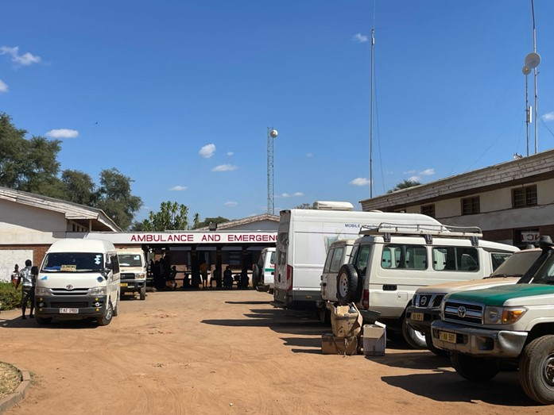

The Health Impact of Investments in Vertical Programs and Broader Health System Development: Findings from Malawi
Tara Mangal and Sakshi Mohan et al.
{kind=link}
Investments in vertical programs for HIV, tuberculosis (TB), and malaria (HTM) have driven substantial public health improvements in low- and middle-income countries. However, their effectiveness can be limited by challenges within broader health systems, such as insufficient human resources, unreliable supply chains, and inadequate infrastructure. This study evaluates the independent and combined health impacts of HTM program scale-up and investments in broader health system development in Malawi, using the Thanzi La Onse (TLO) model.
One finding is that increasing the number of healthcare workers by 6% each year could prevent up to 14% of disability-adjusted life years (DALYs). Focusing on primary healthcare workers alone could prevent about 5% of DALYs. Improving the availability of medical supplies to the standards seen in top-performing programs, like the Expanded Program on Immunization (EPI), could also prevent 9% of DALYs.
These impacts are large relative to the additional cost required: the ‘return-on-investment’ (ROI) from scaling the healthcare workforce across all facility levels could generate an ROI as high as a factor of ×8. Additionally, improving supply chains to reduce stockouts and ensure reliable service delivery showed a strong ROI, further emphasizing the importance of a well-functioning healthcare system.
While targeted programs to reduce diseases such as HIV, tuberculosis, and malaria showed some effectiveness, this study found that the gains were limited by a shortage of healthcare workers and resources. However, when investments in these disease-specific programs (HTM) were combined with broader system improvements, the reduction in DALYs was 12% greater compared to focusing on HTM alone. This joint approach could help avert an estimated 23.4 million DALYs, with 70% of the benefits coming from reductions in diseases beyond those directly targeted by HTM programs. The ROI of a joint approach - combined HTM scale-up with health system strengthening - would be much greater than an approach that focussed only on HTM (see Figure).
Thus, this study shows that a combined investment in both targeted disease programs and broader healthcare system improvements can be more efficient and impactful in reducing illness and disability.
The return on investment for HTM programs, with and without concurrent broader health system investments (HSS), is presented with thresholds of US$0, US$1 billion, and US$3 billion for comparison. Inset: the DALYs averted relative to Baseline for scenarios involving broader health system investments alone, HTM programs alone, and combined investments in vertical and horizontal approaches. Boxed values indicate life expectancy gains in 2035 compared with the Baseline for males and females. Percentage DALYs averted over the 11-year period compared to Baseline are annotated above each bar.